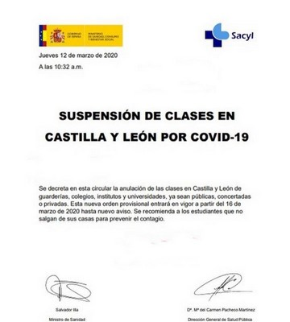
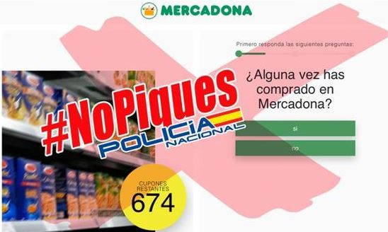
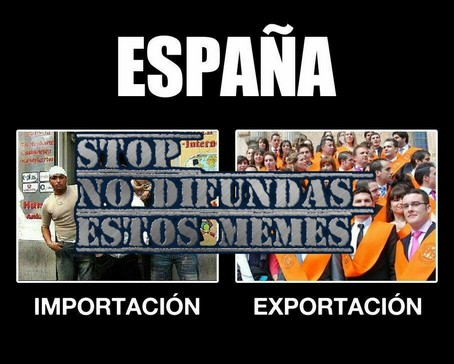
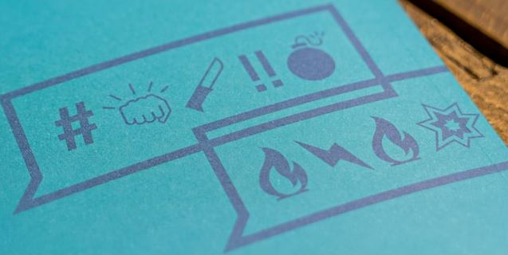

Bulos y fake news
“Si hace 20 años se hacían llamadas anónimas a los institutos para anunciar una falsa alarma de bomba y evitar, por ejemplo, un examen, en esta ocasión se ha difundido una carta falsa anunciando que se tienen que cerrar todos los centros educativos de un lugar”

Tenemos que tener en cuenta que casi siempre hay una intención oculta no ética y lucrativa de los creadores de los bulos:
- Provocar una desestabilización económica por ejemplo este bulo causó la caía de 150 puntos en Wall Street con el considerable beneficio económico de los autores
- Desestabilización política como las que causaron el Asalto al Capitolio o teorías conspirativas como Pizzagate que influyo en las elecciones de EEUU a favor de Trump.
- Los ciberdelincuentes usan los bulos para robar datos personales y bancarios como este

NO EXTIENDAS LAS FALSAS NOTICIAS
Difundiendo una noticia no contrastada, colaboras con los ciberdelincuentes o estás sirviendo a los intereses de grupos no éticos.
Pregúntate❓
1️⃣ ¿Conoces la fuente?
La falta de links, no ir acompañado de una fuente pública, etc... o la fuente es un perfil recien creado... eso es ya muy sospechoso.
Estamos hablando de la fuente original, no de quien te lo ha pasado. Tu primo, tu cuñado o tu amigo NO es una fuente oficial.
Que una noticia se reenvie muchas veces no significa que sea veráz.
OJO, si tiene links, no pinches en ellos !!!
2️⃣ ¿Cuenta alguien más la noticia?
Si al final estás tentando en extenderlo, por favor, antes VERIFÍCALO busca en Internet para confirmar la procedencia del mismo y su autenticidad.
Que en la redacción diga que es de la Guardia Civil, no cuesta nada entrar en la cuenta oficial de la web o RRSS de la Guardia Civil si dicen esa noticia. Si no lo dicen es que NO ES VERDAD.
Si la noticia es de hace varias horas y ningún medio de comunicación profesional ha hecho eco, entonces ES FALSO.
3️⃣ Fíjate en la redacción
Fíjate si es una página satírica, mala redacción, exagera, es alarmista... una fuente oficial o de un medio periodístico cuidan la redacción.
Una pregunta ¿tiene fecha y fuente? un comunicado oficial no olvida esos detalles.
El tema de los bulos es leña en algunos problemas sociales y políticos, por ejemplo en la xenofobia. El Gobierno de Aragón ha elaborado estrategias dentro del programa "Aragon sin bulos" ver

OJO CON LA DIFUSIÓN DE CIERTOS MEMES
Tienes que ser consciente de la difusión de ciertos memes con una intención oculta no ética, por ejemplo el siguiente meme es xenófobo, presupone que los más válidos se van y los sospechosos inmigrantes vienen.

Muchos de estos memes están creados por grupos radicales y utilizan momentos de crísis, como en este caso la económica para su difusión.
No participes en su difusión.
TROLS o HATERS
En Internet, sobre todo las redes sociales hay mucha más tendencia en expresar críticas negativas destructivas que positivas. En especial en ciertos perfiles de algunas personas que buscan provocar, ofender .... es lo que se llama un Trol)
No muerdas el anzuelo y no alimentes al Trol lo mejor que puedes hacer es ignorar estos comportamientos y si eres el administrador de ese foro, blog, ... expulsarlo.

Photo by Mika Baumeister on Unsplash
Dale un vistazo a los últimos Bulos
A continuación se muestran los últimos tweets de @StopBulos :

Ciudadanía digital por Alfabetizacion: INTEF www.http://aprende.intef.es/ y Privacidad: OSI Oficina de Seguridad del Internauta bajo licencia Creative Commons Reconocimiento-NoComercial-CompartirIgual 4.0 Internacional License.